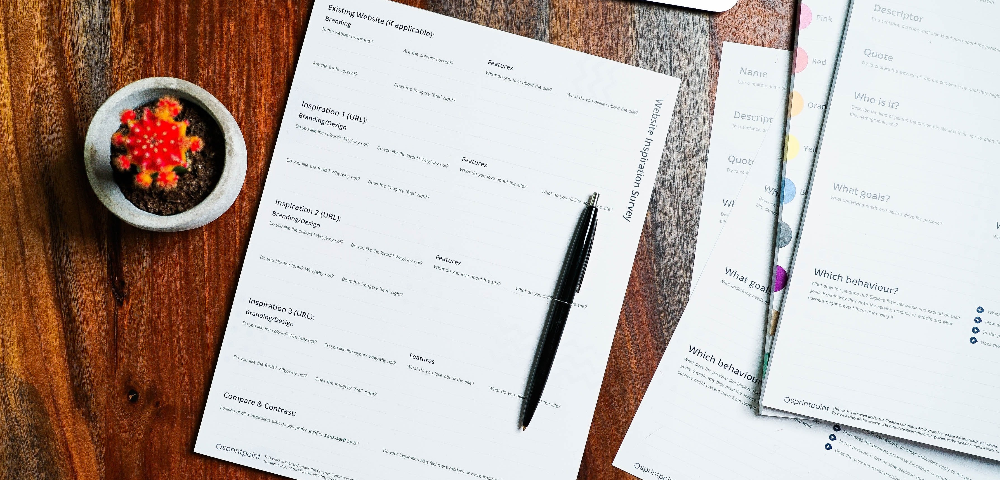

Current Affairs
Current affairs are an important part of many PSC examinations, as they test your knowledge of current events and your ability to analyze and interpret them. You may be asked about local, national, or international news stories, political developments, economic trends, social issues, scientific discoveries, or other relevant topics.
To prepare for current affairs questions, you should stay up to date with news and events by reading newspapers, following news websites, watching news channels, and listening to news radio programs. It's also important to develop your critical thinking skills and be able to evaluate information from multiple sources to form a well-informed opinion.
You may also find it helpful to practice answering sample questions or taking mock exams to familiarize yourself with the types of questions you may be asked and to develop your test-taking skills.

Previous Question's
Understanding the Exam Pattern: By going through previous years' question papers, candidates can get an idea of the exam pattern and the types of questions asked in the exam. This will help them prepare for the exam in a more focused and effective way.
Identifying Important Topics: Previous years' question papers can help candidates identify important topics and areas that are frequently asked in the exam. By focusing on these topics, candidates can increase their chances of scoring higher marks in the exam.
Time Management: Solving previous years' question papers can help candidates understand the importance of time management during the exam. By solving questions within a specified time frame, candidates can improve their speed and accuracy, which is crucial for cracking the exam.
Audio Tutorials
Audio tutorials can be an effective tool for preparing for PSC (Public Service Commission) examinations for several reasons:
Convenience: Audio tutorials can be easily accessed and listened to at any time, whether you are commuting to work, doing household chores, or taking a break from studying. This allows you to maximize your study time and make the most of your busy schedule.
Retention: Listening to information can help you retain it better than simply reading or studying it. This is because listening engages different parts of your brain, making it easier for you to remember what you have learned.
Accessibility: Audio tutorials can be especially helpful for people who have visual impairments or learning disabilities that make it difficult to read and study written material. They can also be useful for people who prefer auditory learning.